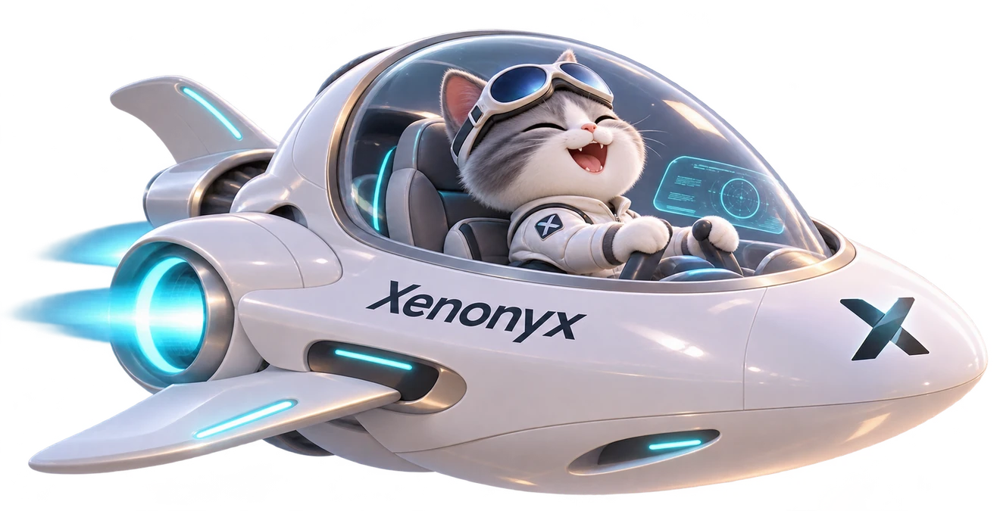

⌂
Make home projects less painful.
Turn ambitious home ideas into real projects. Good tools, great tradies, fewer “where do I even start?” moments.
TRADIGO UNIVERSEOne little cat. One ridiculously ambitious star map. Building useful, delightful worlds — one planet at a time.

✧ CAPTAIN: PROFESSIONAL DAYDREAMEREvery big idea starts on a tiny planet. Hover over one (or tap it) to see what's cooking.
Two planets down. An unreasonable number of ideas to go. Some of the best worlds are still just tiny specks in the distance.
Our mission statement was written by a cat with access to a spaceship. Surprisingly, it makes sense.
Turn ambitious home ideas into real projects. Good tools, great tradies, fewer “where do I even start?” moments.
TRADIGO UNIVERSEBetter connections, clever experiences and a little more magic for our furry co-pilots.
WETNOSE UNIVERSEPractical AI, playful design, strange new ideas. We're building for real life, but dreaming in galaxies.
TO BE CONTINUED...Send us a transmission. The captain is probably awake.
Say hello EARTH OFFICE · MELBOURNE, AUSTRALIA ✦ CURRENTLY ACCEPTING GOOD IDEAS